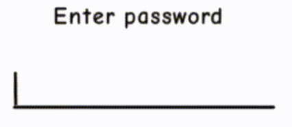
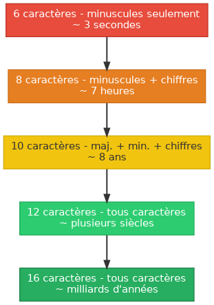

Comment craque-t-on un mot de passe ?
Table des matières
1. Introduction

Un mot de passe est censé protéger nos données. Pourtant, chaque année, des millions de comptes sont compromis car les gens choisissent des mots de passe catastrophiques.
«Le maillon le plus faible d’une chaîne de sécurité, c’est presque toujours l’humain.»
- Bruce Schneier, cryptographe
Avant de voir comment on craque un mot de passe, petit tour sur ce que les gens utilisent réellement.
2. Les mots de passe les plus utilisés au monde
Chaque année, des bases de données leaked sont analysée. Le résultat est… décourageant.
| Rang | Mot de passe | Temps pour le craquer |
|---|---|---|
| 1 | 123456 |
moins d’1 seconde |
| 2 | password |
moins d’1 seconde |
| 3 | 123456789 |
moins d’1 seconde |
| 4 | azerty |
moins d’1 seconde |
| 5 | iloveyou |
moins d’1 seconde |
| 6 | admin |
moins d’1 seconde |
| 7 | motdepasse |
moins d’1 seconde |
| 8 | qwerty123 |
moins d’1 seconde |
3. Les principales techniques d’attaque
3.1. Brute force
La technique la plus simple : on essaie toutes les combinaisons possibles, une par une, jusqu’à trouver la bonne.
a,b,c…zaa,ab,ac…aaa,aab…
C’est lent, mais avec un bon ordinateur (ou un GPU), ça va très vite :
| Longueur | Caractères utilisés | Temps estimé |
|---|---|---|
| 6 car. | minuscules seulement | 3 secondes |
| 8 car. | minuscules + chiffres | 7 heures |
| 10 car. | majuscules + minuscules + chiffres | 8 ans |
| 12 car. | tous caractères | plusieurs siècles |
3.2. Attaque par dictionnaire
Plutôt que toutes les combinaisons, on essaie une liste de mots courants : noms communs, prénoms, dates, mots de passe connus…
Les attaques par dictionnaire réussissent dans la majorité des cas,
Soleil1! ne trompe personne.
4. Un exemple de brute force en C
Voici un programme minimaliste qui illustre le principe d’une attaque brute force sur un code à 4 chiffres :
#include <stdio.h> int main() { int cible = 1337; int essais = 0; for (int i = 0; i <= 9999; i++) { essais++; if (i == cible) { printf("Mot de passe trouvé : %04d\n", i); printf("Nombre d'essais : %d\n", essais); return 0; } } return 0; }
en python :
cible = 1337 essais = 0 for i in range(10000): essais += 1 if i == cible: print(f"Mot de passe trouvé : {i:04d}") print(f"Nombre d'essais : {essais}") break

5. Ce qu’il reste à faire
5.1. TODO Activer la double authentification (2FA) sur ses comptes principaux
La 2FA ajoute une deuxième couche de sécurité, meme si l’appareil est volé.
5.2. TODO Installer un gestionnaire de mots de passe
Retenir 50 mots de passe différents, c’est impossible.
5.3. TODO Vérifier ses comptes compromis
haveibeenpwned.com recense les bases de données leaked. S
6. Conclusion
La meilleure défense reste simple : un mot de passe long, unique, et stocké dans un gestionnaire.
Recette d’un bon mot de passe : une phrase dont tu te souviendras, avec
quelques substitutions - MonChatMange3Souris! est bien plus solide que
P@ssw0rd, et pourtant bien plus facile à retenir.